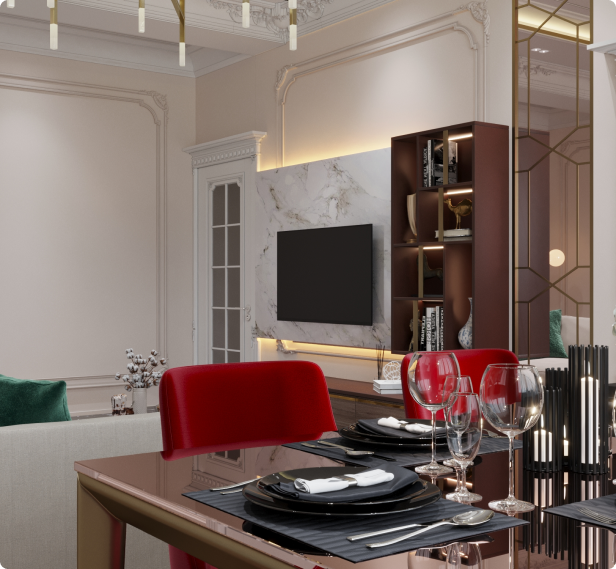
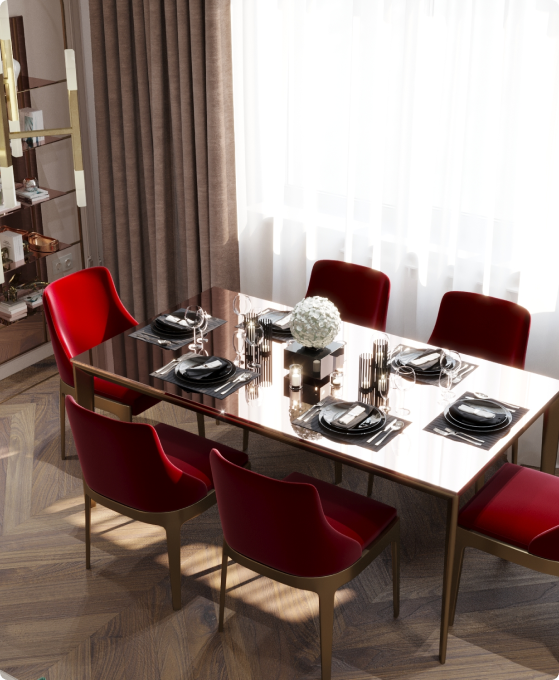
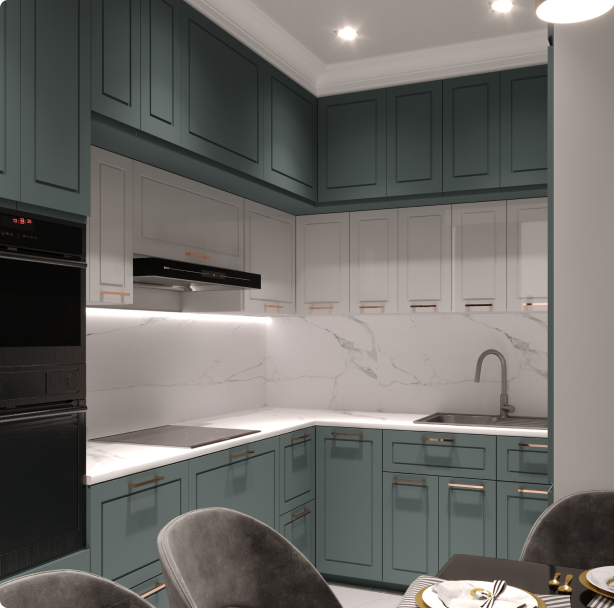
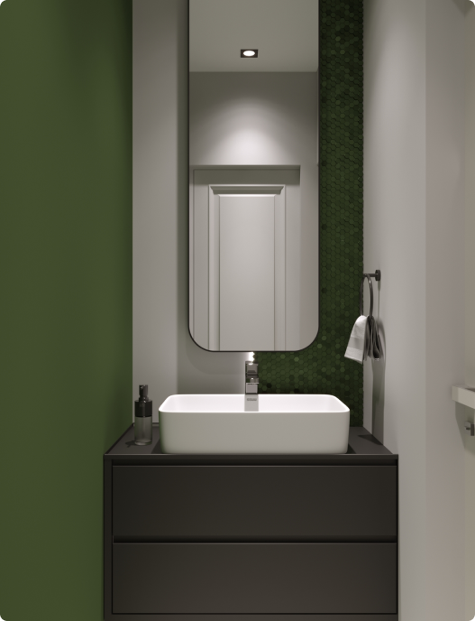
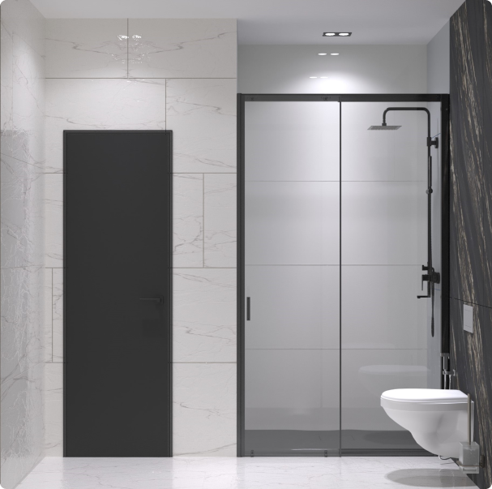
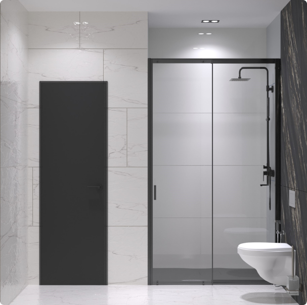
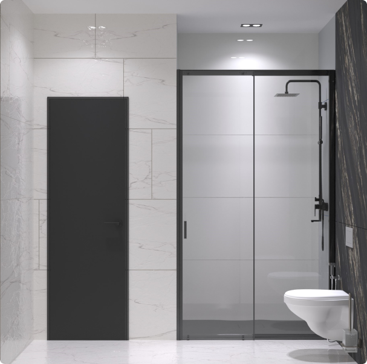

Стиль неклассика очень востребован
в настоящее время, так и в этом проекте
мы создали сочетание аккуратной нотки классики
с нежнымисовременными деталями.
кв.м: 197 м2
Тип: Участок новостройка
Местонахождение: Ташкентская область
Дата Релиза: 2022
ТХолл и гостинная образовали одну комнату,
где кухонная зона осталась изолированной.
Везде присутствует лаконичность белого и коричневого цветов, их подчеркнутая сдержанность,
рождающая впечатление безукоризненного выверенного интерьера.


Нежные пастельные тона,
фактурная мягкая мебель и зеркала на стене - основа интерьра данной спальни.
Прикроватная тумба с вкраплением латуни и современные элементы мебели разбавляют классический интерьер.
Также идельно дополняет декор филенки на стенах и двери с молдингами,
что традиционная для неоклассического стиля.


Главной задачей в создании гостиной было разделение помещения на функциональные зоны,
имеющие разное назначение и объединение двух зон в одну целую.
Таким образом гостиная-студия включает в себя зону отдыха,
обеденную зону,
ТВ-зону с элементами декора и мягкой мебелью и конечно с приглушенным освещением.

Ремонт гостиной в стиле неоклассика чаще всего основан на отделке качественными обоями,
оформлении стен и потолка молдингами,
а пола паркетом (инженерной доской) и керамогранитом под мрамор.
Наиболее популярной цветовой гаммой считается нейтральная:
бежевая, коричневая, белая, серая, иногда с темно-серыми или черными нюансами.


 
